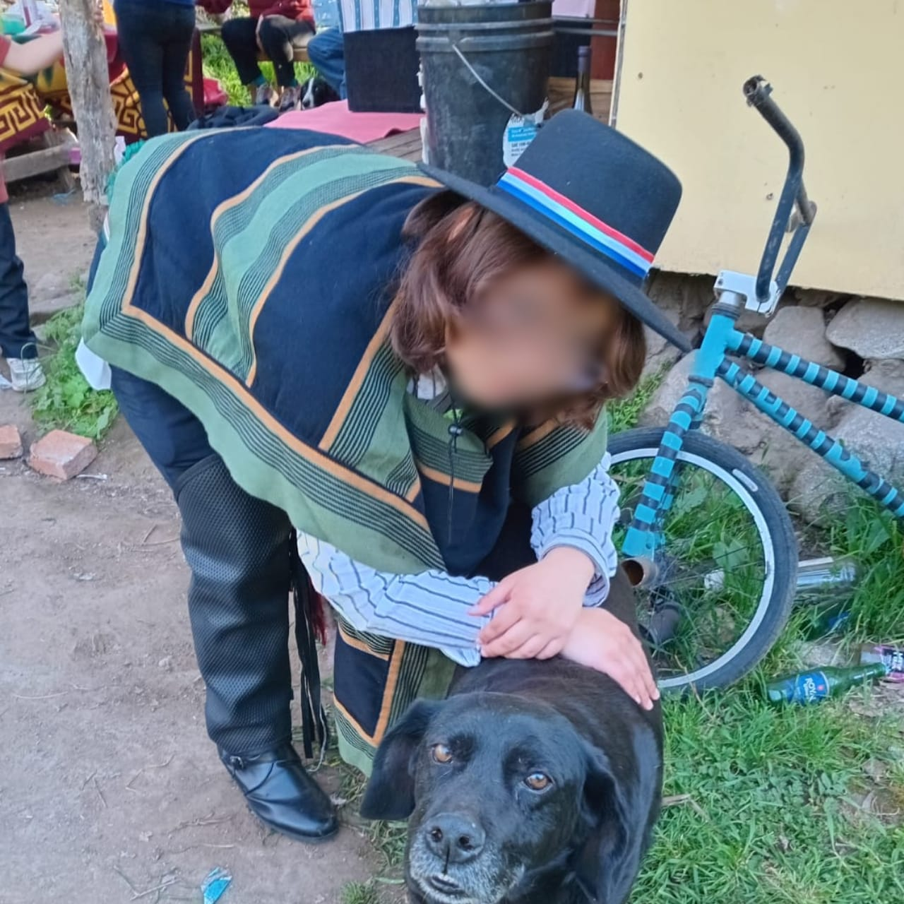
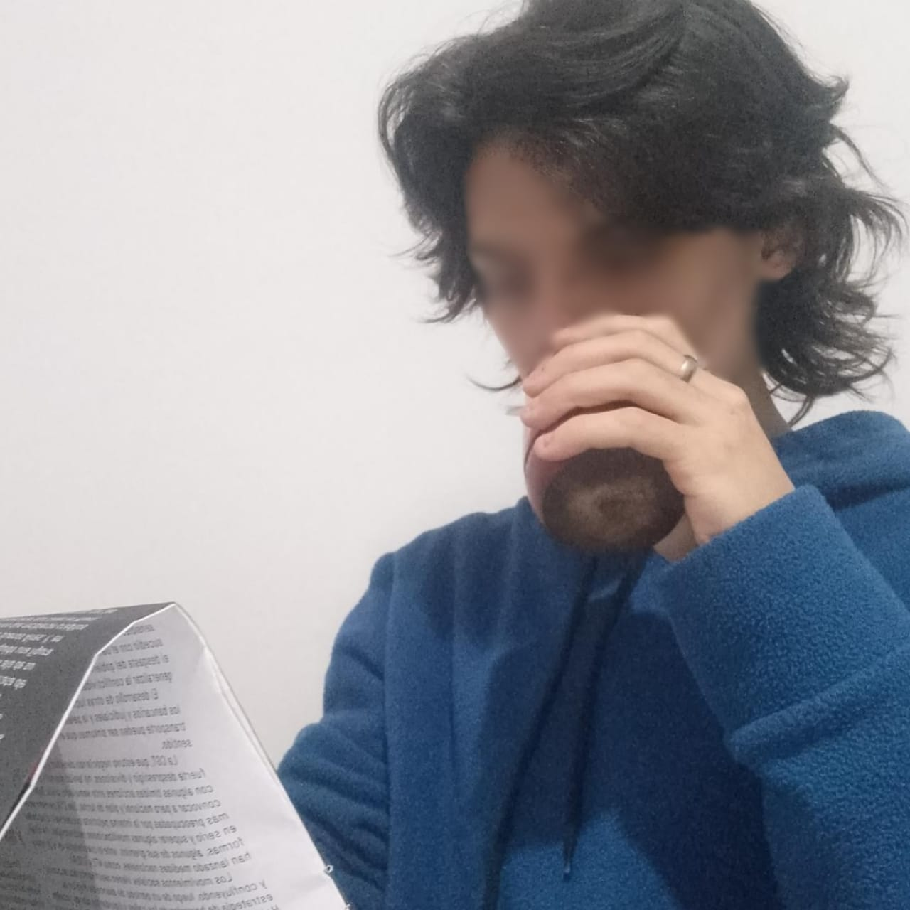
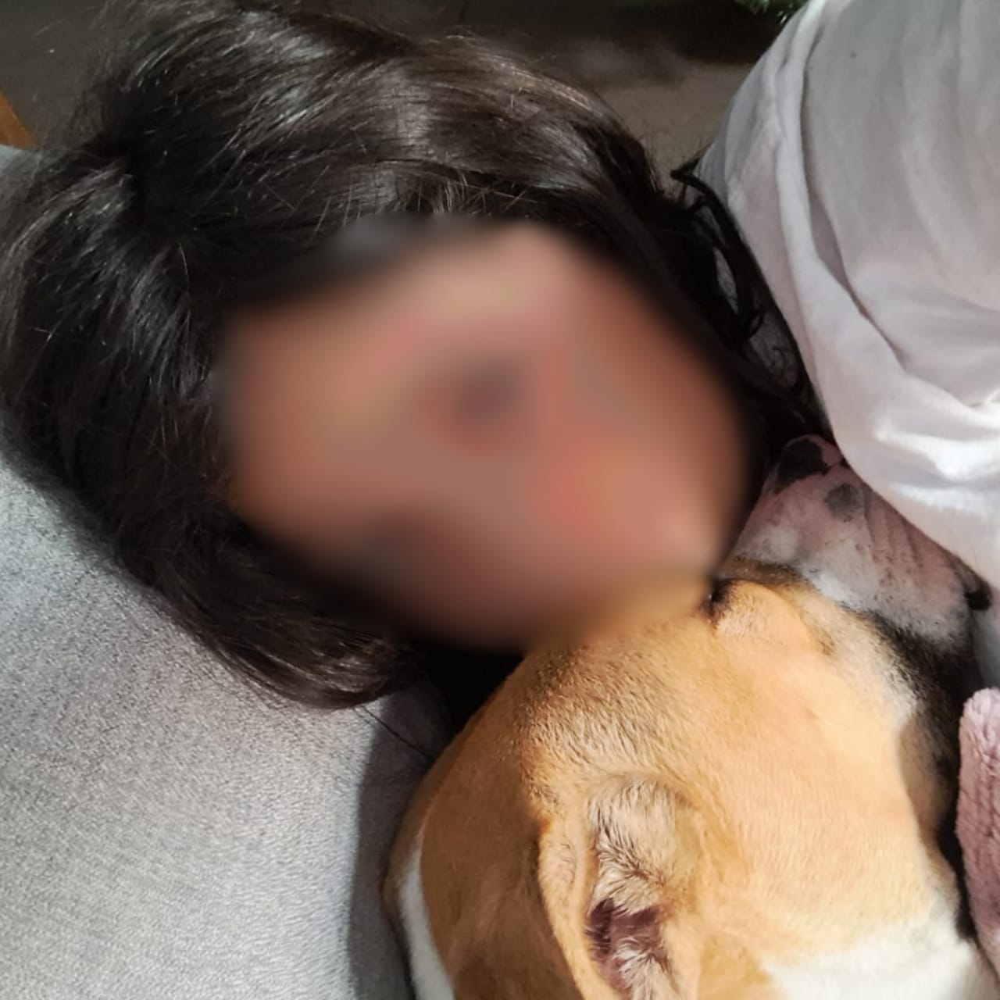
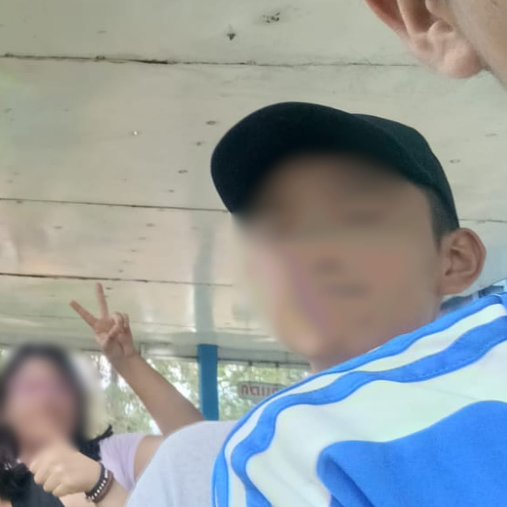
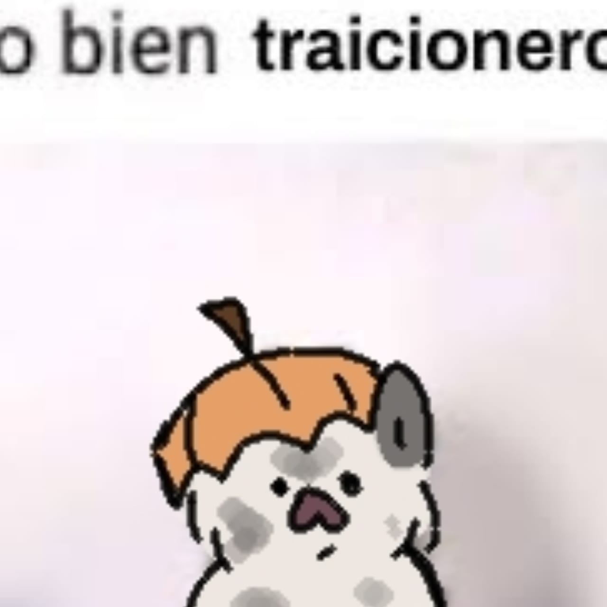
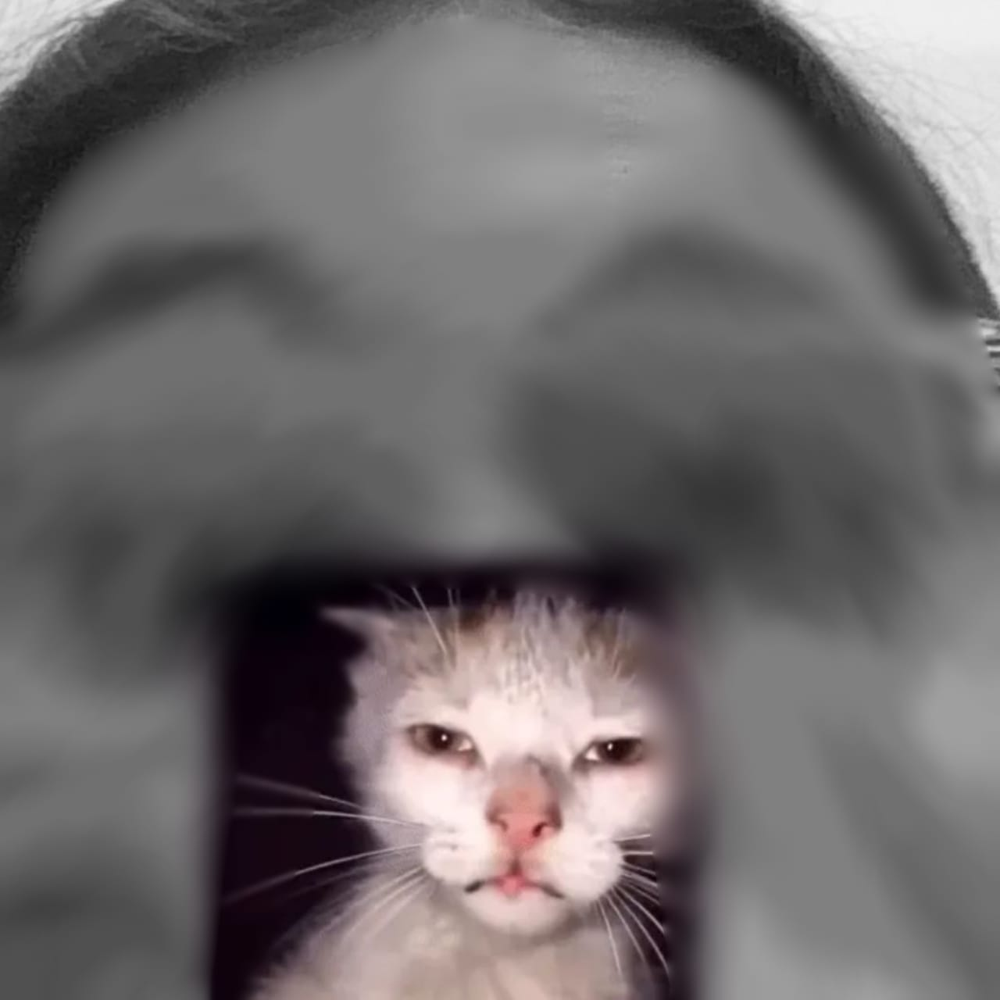
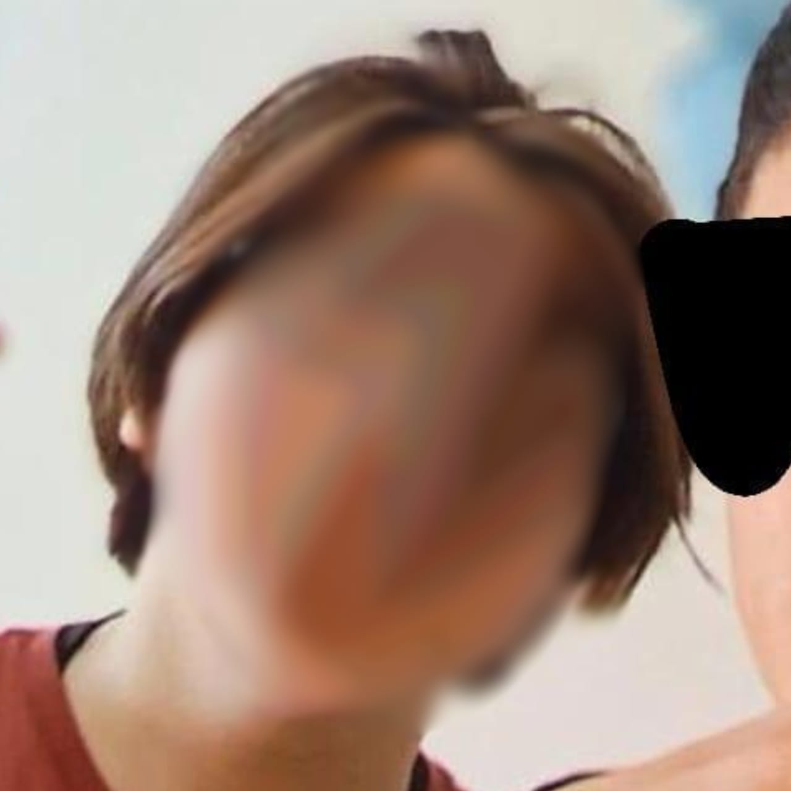
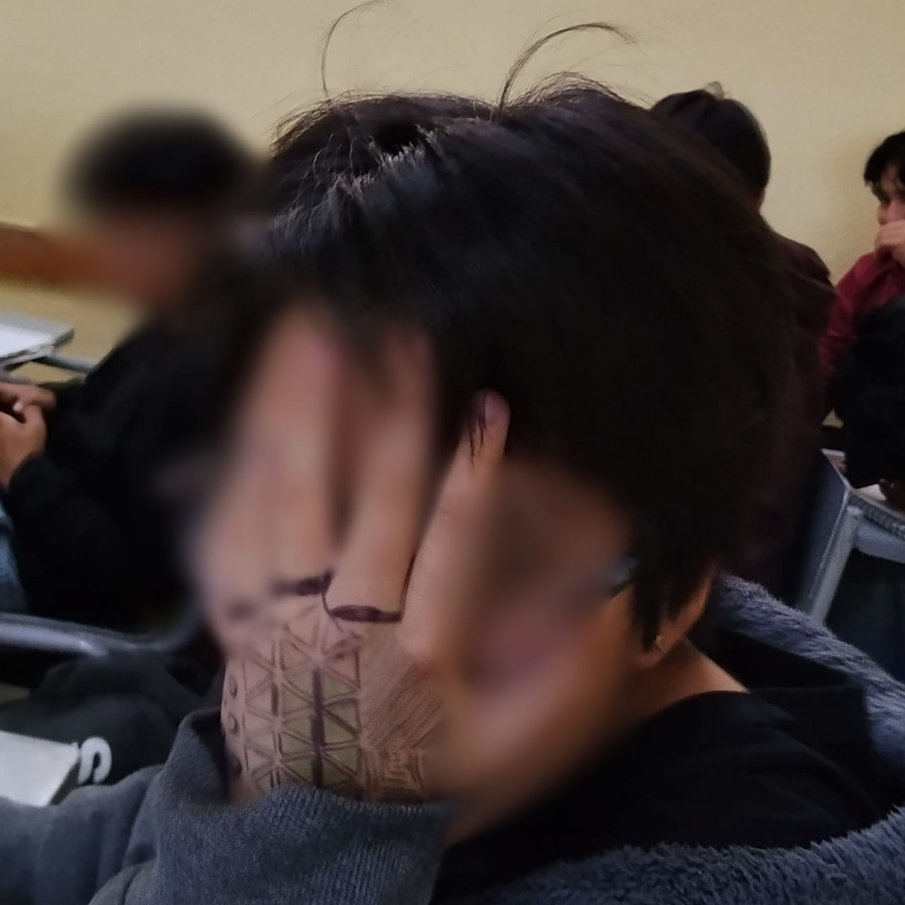

| Nombre | Descripción | Foto |
Damián/Dami/Dam |
Lo conocí cuando tenía 9-10 años, estabamos entrando en pandemia, hablamos por primera vez en una aplicación llamada amino, la cual coincidimos en una de las comunidades de esta, luego comenzamos a conversar sobre nuestros gustos y demás, al final nos hicimos amigos y actualmente llevamos 6 años de amistad, aunque hayamos tenido nuestro conflictos, pero aún así es mi mejor amigo y lo quiero mucho :), creativo pero de poca autoestima y falta de motivación |
 |
|---|---|---|
|
Joaquin/Blanquis |
Lo conocí cuando tenía 10 años, lo concí igual en la misma aplicación que Damián, pero en una diferente comunidad llamada: "Comunidad del desmadre", fue otro de mis amigos virtuales, no hablamos mucho pero nos queremos a nuestra manera y hacemos referencias sobre nuestras vidas, igualmente en la actualidad llevo 6 años de amistad con él, inteligente y de gran corazón, se ve nota el esfuerzo que da en la escuela |
 |
|
Yaretzy/Yaret |
La conocí en mi primer día de secundaria, me pregunto en que fila ibamos para la formación, pero yo no sabía, luego, comenzamos a hablar más, sinceramente yo pensé que le caía mal, pero no fue así, pasamos nuestra secundaria hablando y demás, compartimos gustos por varias cosas y también organizabamos salidas con nuestros otros dos amigos, es una amiga maravillosa y actualmente llevo 4 años de amistad con ella, le falta echarle más ganas y poner atención en clases |
 |
|
Joshua/Jochua |
Lo conocí en la secundaria, Yaretzy me lo había presentado, sinceramente fue un chico muy tímido, pero luego se fue desenvolviendo con nosotros poco a poco, al final resultó ser más de lo que se veía, es un muy buen amigo, de caracter algo fuerte pero tranquilo, le agradezco mucho que él allá estado conmigo en los recesos en la secundaria e igual salía con él, Yaretzy y otro amigo más, actualmente igual llevo 4 años de amistad, de gran corazón y obviamente ama a su perro |
 |
|
Amy/Emi |
La conocí por Damián, al principio pues me dio miedo conocerla, pero luego fuimos hablando y pues sinceramente me cayó super bien, teniamos gustos algo similares, también es una chica de un humor muy bueno, siempre alegra el día o la noche, sus dibujos son muy bonitos, una chica de gran corazón, actualmente llevamos 3-4 años de amistad, alguien noble, leal y creativa |
 |
|
Diego/Dieguito |
Lo conocí igualmente por Damián, no se lo voy a negar, al principio me cayó mal porque era muy celoso en ese tiempo pero cuando comenzamos a hablar me cayó muy bien, es todo un tipazo mi Dieguito, es una persona linda, le gusta mucho los Beatles, es muy guapo y aparte es un chico de gran corazón, igualmente a el lo quiero mucho, en la actualidad llevamos 2-3 años de amistad, noble, leal, carismatico, amable y un chico sensible |
 |
|
Arturo/Arty/Arturito |
Lo conocí igualmente por Damián, igualmente me cayó un poco mal al principio, pero luego convivimos más, aunque hubo una vez que me gusto y pues, no paso nada sinceramente, al final, nos resolvimos, pero por situaciones personales de el no nos hablamos, hasta que finalmente después de resolver esos problemas nos volvimos a hablar todo normal y actualmente tengo 1 año de amistad con él, es un chico amigable, carismatico, perseverante e inteligente, también muy creativo |
 |
|
Eldar |
Lo conocí en mi primer día en el CECyT 3, en primer semestre y fue porque mencione sobre como quería que me llamaran y sobre mi identidad de género, depués me acerque a él y me dijo que sintió admiración por mi al haber hecho eso, después hablamos y teníamos gustos similares, aparte a mi me había caído muy bien, aunque estaba muy tímido al principio, pero después se fue desenvolviendo igualmente, es un buen chico y le gusta mucho la informatica y los aviones, actualmente llevamos 10 meses de amistad, semi-agradable, algo ruidoso, a veces hostil, carismatico, tranquilo y antisocial |
 |